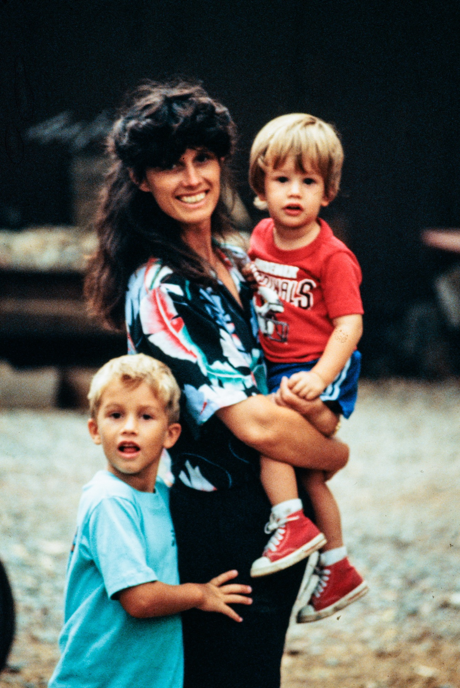
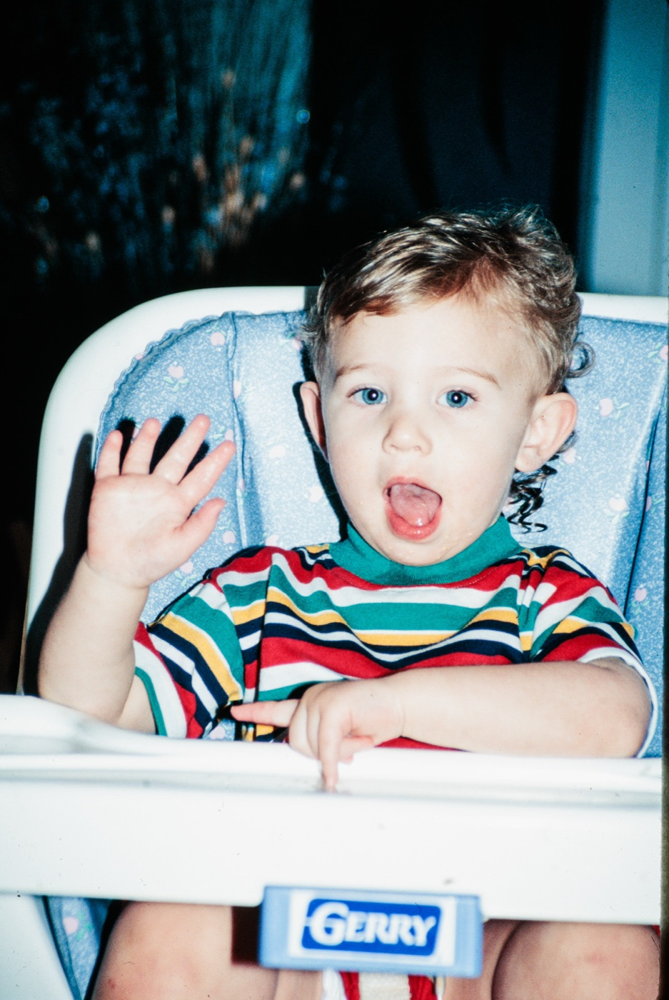
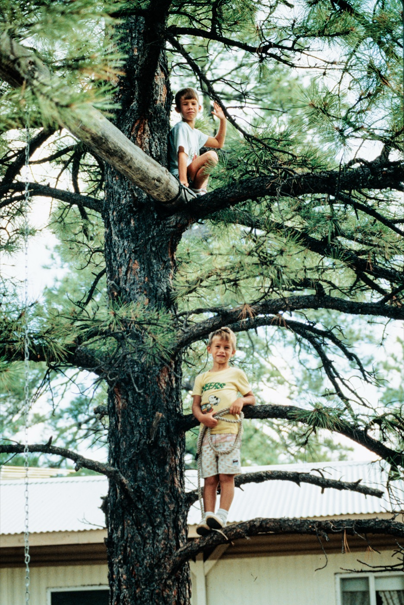
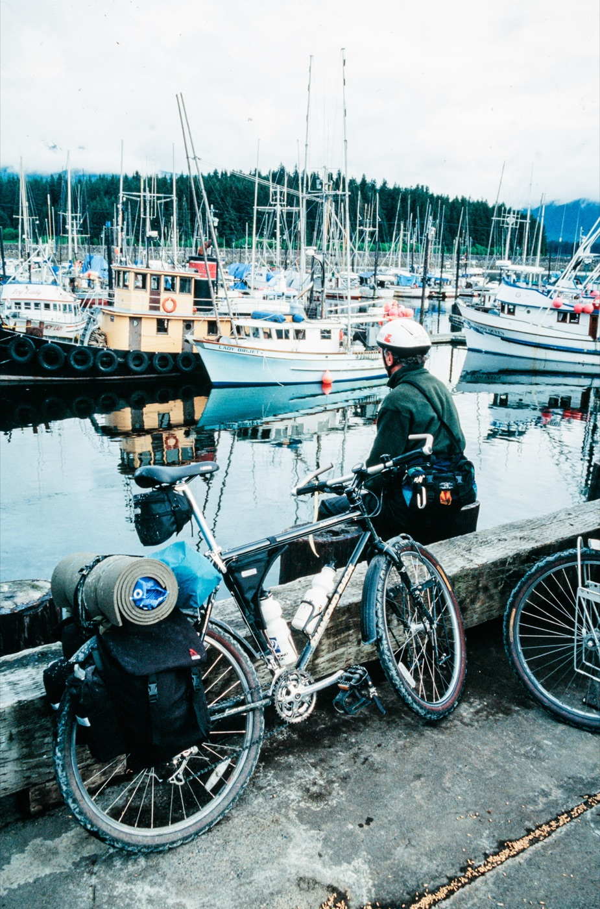

Keep Your Memories from Becoming History
Film captures moments that can never be recreated, but every year those memories become more vulnerable to fading and damage. We help preserve your family's story by transforming your film slides into beautiful digital images that can be enjoyed for generations.
Get in touchAbout Memory Keep

Based in Gilbert, Arizona, MemoryKeep was founded with a simple goal: helping families preserve their memories for future generations.
We understand that film slides are more than just photographs. They capture family vacations, holidays, milestones, and moments with loved ones that cannot be recreated. Unfortunately, many of these memories remain stored away in boxes, unseen for decades, while the film itself continues to age.
That is why we are passionate about bringing those memories back to life. We combine modern technology with careful attention to detail to convert your film slides into digital images that can be easily shared, stored, and enjoyed by family members for years to come.
As a small local business, we take pride in treating every collection with the care and respect it deserves. Whether you have a handful of treasured slides or an entire family archive, our goal is to help preserve your history and make it accessible for future generations.
At MemoryKeep, we believe your memories are worth preserving.
Get in touchPreserved Memories
“My husband sits and scrolls through his digital slide album all the time.”Dianne
Preserved Memories
“What started as old slides became family history thought to be lost forever.”StevenRead Steven’s story
Memory Keep Difference
At MemoryKeep, we believe your family memories deserve more than a scan.
Based in Gilbert, Arizona, we are a small team dedicated to preserving film slides with exceptional quality and attention to detail. While most digitization services rely on traditional scanners, we employ a unique approach designed to capture the beauty and character of the original film.
Each slide is individually rephotographed using a professional-grade digital camera paired with a specialized macro lens and precision lighting system. This allows us to capture remarkable detail, rich color, and the unique qualities of the original image that are often lost through conventional scanning methods.
The result is more than a digital copy. It is a beautifully restored memory that can be shared, preserved, and enjoyed for generations to come.
Because preserving your family's story deserves more than the standard process, it deserves MemoryKeep.
“What I like about photographs is that they capture a moment that’s gone forever, impossible to reproduce.”Karl Lagerfeld



Let's Make Your Memories Last
Every collection has a story worth preserving. Reach out today and we'll be happy to answer your questions and help bring your memories into the digital age.
Contact us